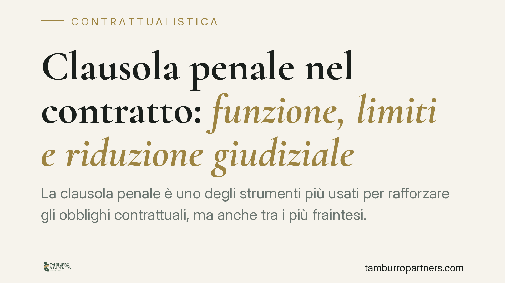

Clausola penale nel contratto: funzione, limiti e riduzione giudiziale
La clausola penale è uno degli strumenti più usati per rafforzare gli obblighi contrattuali, ma anche tra i più fraintesi. Non serve a punire chi sbaglia: quantifica in anticipo il danno da inadempimento e semplifica il recupero. Vediamo come funziona, quali limiti pone il codice civile e in quali casi il giudice può intervenire per ridurne l'importo.

Cosa prevede la norma
La clausola penale è disciplinata dall'art. 1382 del codice civile. Con essa le parti concordano, già al momento della stipula, la somma che il debitore dovrà pagare in caso di inadempimento o di ritardo nell'adempimento.
L'effetto principale è duplice. Da un lato la penale limita il risarcimento alla somma pattuita: chi subisce l'inadempimento non deve provare l'ammontare del danno, perché è stato fissato in anticipo. Dall'altro, salvo diverso accordo, non è dovuto il risarcimento del danno ulteriore. Se le parti vogliono conservare la possibilità di chiedere di più, devono prevederlo espressamente (art. 1382, comma 1, c.c.).
La penale è dovuta a prescindere dalla prova del danno concreto (art. 1382, comma 2, c.c.). Questo è il suo vantaggio operativo: evita contenziosi lunghi sulla quantificazione. Attenzione, però, alla funzione: la clausola non ha scopo sanzionatorio. Non serve a "punire" la controparte, ma a rafforzare il vincolo contrattuale e a predeterminare le conseguenze economiche dell'inadempimento.
Il potere di riduzione del giudice
Qui sta il limite più rilevante. L'art. 1384 c.c. consente al giudice di ridurre la penale quando è manifestamente eccessiva, tenuto conto dell'interesse che il creditore aveva all'adempimento, oppure quando l'obbligazione principale è stata eseguita solo in parte.
La giurisprudenza della Corte Suprema è consolidata su un punto: la riduzione può essere disposta anche d'ufficio, cioè senza che la parte inadempiente la richieda espressamente. Il giudice valuta l'equilibrio complessivo tra la prestazione dovuta e la sanzione economica pattuita. "Manifestamente eccessiva" non significa semplicemente alta: significa sproporzionata rispetto all'interesse realmente in gioco.
Questo ha una conseguenza pratica importante. Inserire una penale altissima nella speranza di scoraggiare l'inadempimento è una strategia fragile: se finisce davanti a un giudice, l'importo rischia di essere ridimensionato. Una penale ben calibrata sull'interesse contrattuale è più solida di una penale gonfiata.
Cosa cambia per chi firma un contratto
Per l'impresa che redige un contratto, la clausola penale è uno strumento di gestione del rischio. Permette di sapere in anticipo quanto si rischia di pagare in caso di ritardo o inadempimento, e di negoziare quel valore in modo consapevole.
Per chi la subisce, è essenziale leggerla con attenzione prima della firma. Una penale accettata senza valutarne l'importo può diventare un costo rilevante anche per un inadempimento minore. E non sempre sarà possibile contare sulla riduzione giudiziale: quella opera solo entro i limiti della manifesta eccessività o dell'adempimento parziale.
Va anche distinta la penale dalla caparra: sono istituti diversi, con funzioni e meccanismi differenti. Confonderli in fase di redazione genera clausole ambigue e contenziosi evitabili.
Cosa fare in concreto
- Calibrate l'importo sull'interesse reale all'adempimento: una penale proporzionata regge meglio di una punitiva.
- Specificate se copre ritardo, inadempimento o entrambi: una formulazione generica lascia spazio a interpretazioni divergenti.
- Prevedete espressamente il danno ulteriore se volete conservare la possibilità di chiederlo oltre la somma pattuita.
- Non confondete penale e caparra: verificate quale istituto risponde davvero all'obiettivo del contratto.
- Fate revisionare la clausola prima della firma, soprattutto se l'importo è significativo o il contratto è di durata.
In sintesi
La clausola penale funziona bene quando è pensata come strumento di equilibrio, non come arma. Predetermina le conseguenze dell'inadempimento, semplifica il recupero e riduce l'incertezza. Ma resta soggetta al controllo del giudice, che può ridurla quando risulta sproporzionata. Consigliamo di trattarla come una scelta di merito, da negoziare con la stessa cura riservata all'oggetto principale del contratto.
---
*Contributo informativo a cura di Tamburro & Partners - Avv. Giuseppe Tamburro. Non costituisce parere legale.*
Ogni contratto ha il suo equilibrio.
Se vuoi una revisione delle clausole o una redazione su misura, scrivi allo studio. Ti rispondiamo entro un giorno lavorativo.